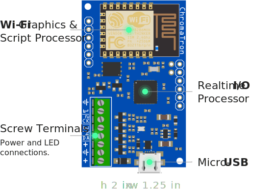
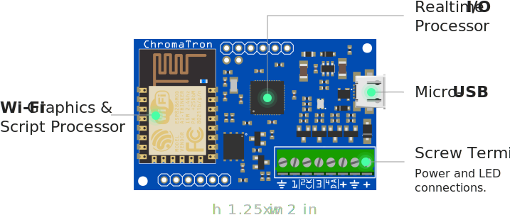

 
This processor runs the real time OS, handles raw pixel data output, USB, auxiliary IO, and the user file system.
Handles Wi-Fi communications, scripting engine VM, pixel faders, and HSV to RGB colorspace conversion. Connected to the real time processor via 4 MHz UART bridge.
Sapphire Open Systems is an Austin, TX based startup whose mission is to enable hobbyists, makers, and professionals to connect anything to everything and promote open source and interoperability as a better way to make electronics.
All software and hardware will be released under OSI compatible licenses once the project hits the funding goal.